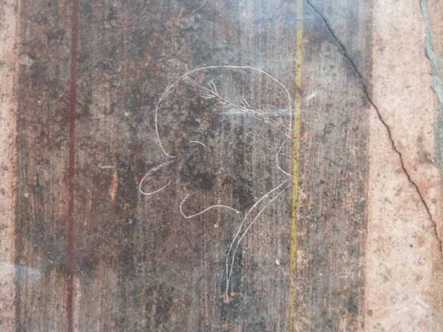

How to design your "You got hacked" page
An overview of defacement pages and design how-to
Old Gregg by proxy of digital shokunin
Defacement pages
The digital graffiti/vandalism of the Internet
POTENT NOTABLES
or
Notable defacements throughout history
Ancient graffiti

The Vandals
Modern Day
Defacement pages
How did they evolve
or devolve?
Top scorers
GHoST61: 57
OxFoRD & Omis Exe: 54
Kuroi'SH: 41
Oum99: 40
Oussama911: 37
Best Cracker: 35
r00t-x: 31
Prodigy TN: 25
TechnicaL: 25
koat_halk_palesten: 24
zone-h.org
attrition.org
www.flashback.se/hack/
Defacement Design
Blink/Flash all the things
Revenue model
Music
Thankz/Greetz